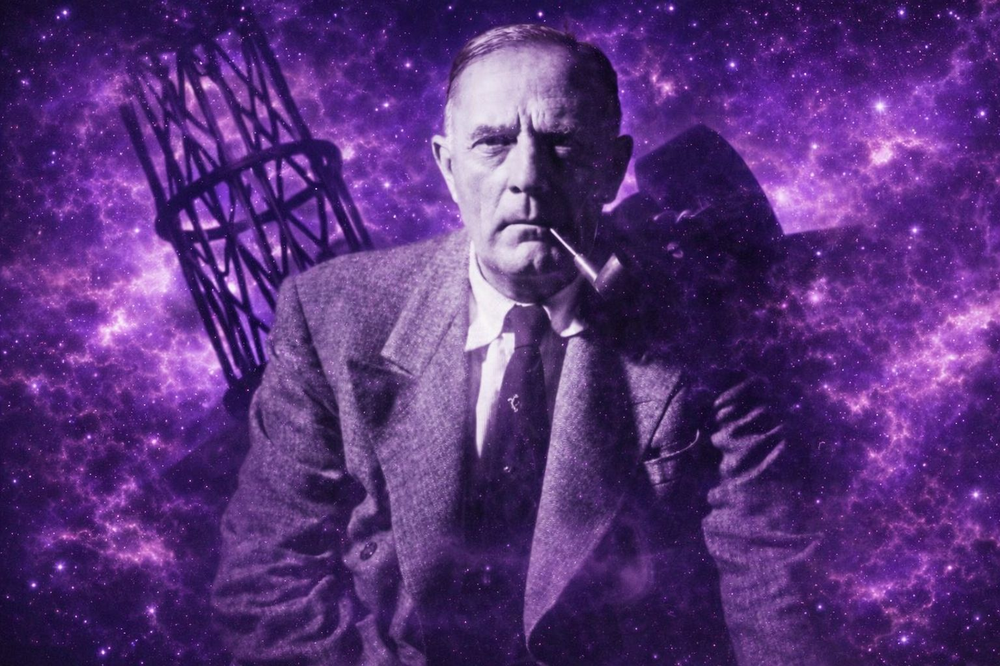
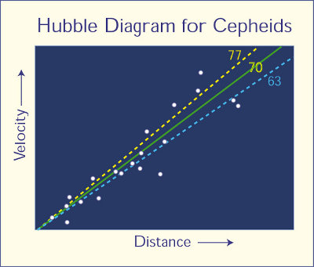
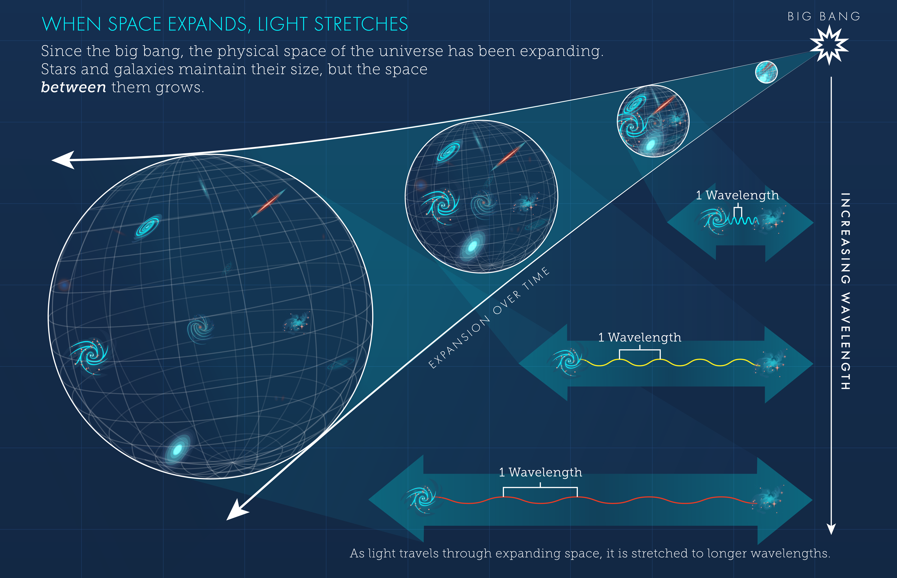

Edwin Powell Hubble (1889 – 1953) was an American astronomerAn astronomer is a scientist who studies celestial objects, space, and the physical universe as a whole. who made groundbreaking discoveries that revolutionized our understanding of the cosmosThe universe considered as an orderly, harmonious, and structured system, often implying an ordered and interconnected whole... After studying law at Oxford as a Rhodes Scholar and even a brief stint as a high school basketball coach, he pursued his passion for astronomy. His work primarily focused on observing nebulaeNebulae: Interstellar clouds composed of dust, hydrogen, helium, and other ionized gases. They serve as regions where new stars form, or they represent the remnants of dead stars, and can also be simply diffuse clouds illuminated by nearby celestial objects. with the powerful Hooker TelescopeThe Hooker Telescope is a 100-inch (2.5-meter) reflecting telescope located at Mount Wilson Observatory in California, famous for its use by Edwin Hubble in making groundbreaking cosmological discoveries. at Mount Wilson Observatory.
Hubble provided conclusive evidence that many "nebulae" previously thought to be gas clouds within the Milky WayThe Milky Way is the galaxy that contains our Solar System, appearing as a hazy band of light in the night sky formed from millions of stars. were, in fact, entire galaxies far beyond our own. His most significant contribution, however, came in 1929 when he observed a direct relationship between a galaxy's distance from Earth and its recessional velocityRecessional velocity: The speed at which a celestial object, typically a galaxy, is moving directly away from an observer, primarily due to the expansion of the universe. It is determined by measuring the redshift of the object's emitted light.,now famously known as Hubble's Law. This discovery provided the first strong observational evidence for the expansion of the universe, laying a cornerstone for the Big Bang theory.
Hubble's Law describes a fundamental relationship in cosmology: the universe is expanding, and galaxies are moving away from each other at a speed proportional to their distance. The farther away a galaxy is, the faster it appears to recede from us. This relationship is mathematically expressed by the equation:
$$v = H_0 d$$
Represents the speed at which a distant galaxy is moving away from the observer due to the expansion of space. This velocity is determined by observing the redshift of the galaxy's light. Units: Typically measured in kilometers per second (km/s).
This is the constant of proportionality that describes the current rate of the universe's expansion. Its value has been refined over time through various astronomical measurements. A higher H₀ implies a faster expansion rate. Value: Current estimates for H₀ are around 67 to 74 km/s/Mpc (kilometers per second per megaparsec). For instance, 70 km/s/Mpc means that for every megaparsec (about 3.26 million light-years) a galaxy is away from us, it recedes an additional 70 km/s faster. Units: Measured in kilometers per second per megaparsec (km/s/Mpc).
Represents the proper distance from the observer to the galaxy. This is the distance as it would be measured at a specific cosmic time. Units: Typically measured in megaparsecs (Mpc), where 1 Mpc ≈ 3.086 × 10¹⁹ kilometers.
$$v = H_0 d$$ is read aloud as:
"Velocity equals H naught d"
or more descriptively:
"Recessional velocity equals the Hubble constant times distance"

